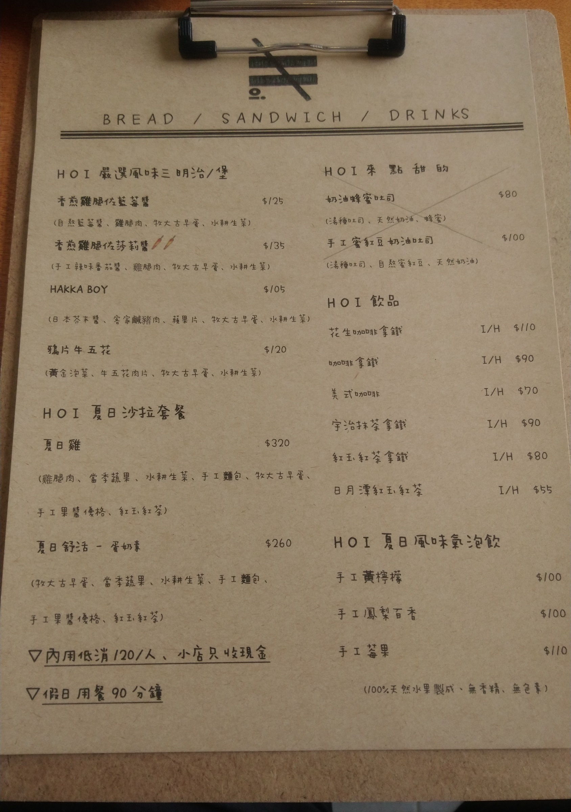
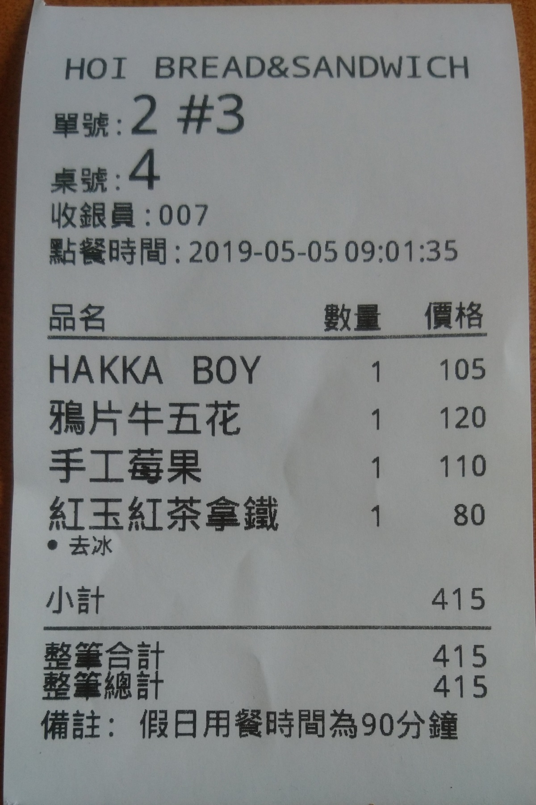
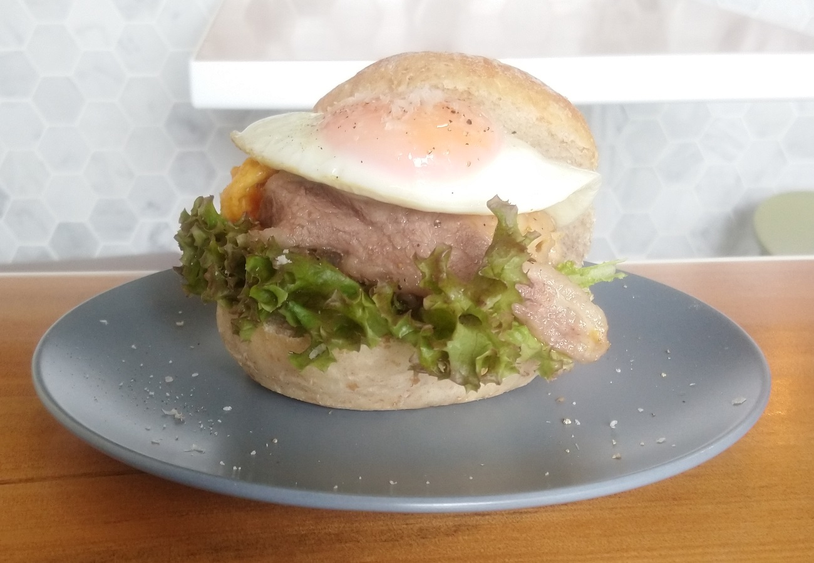
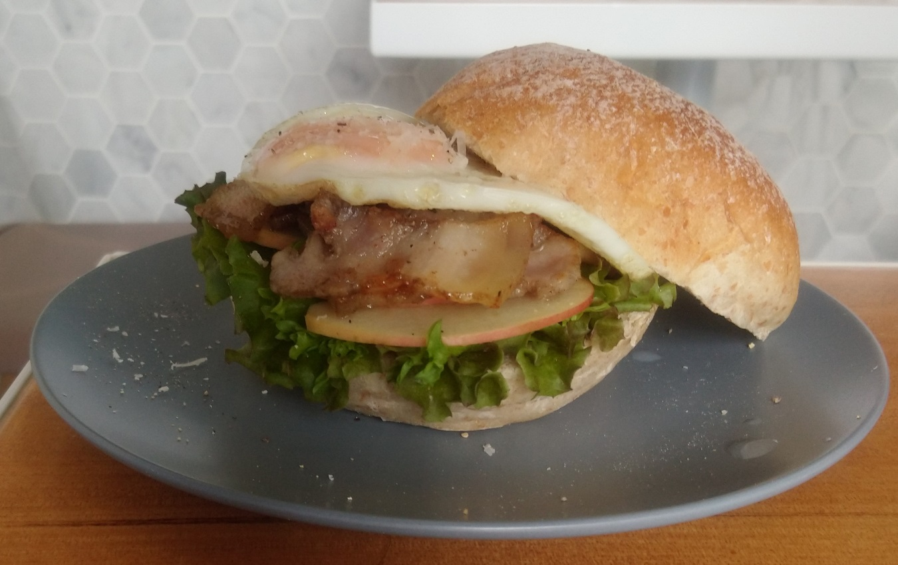
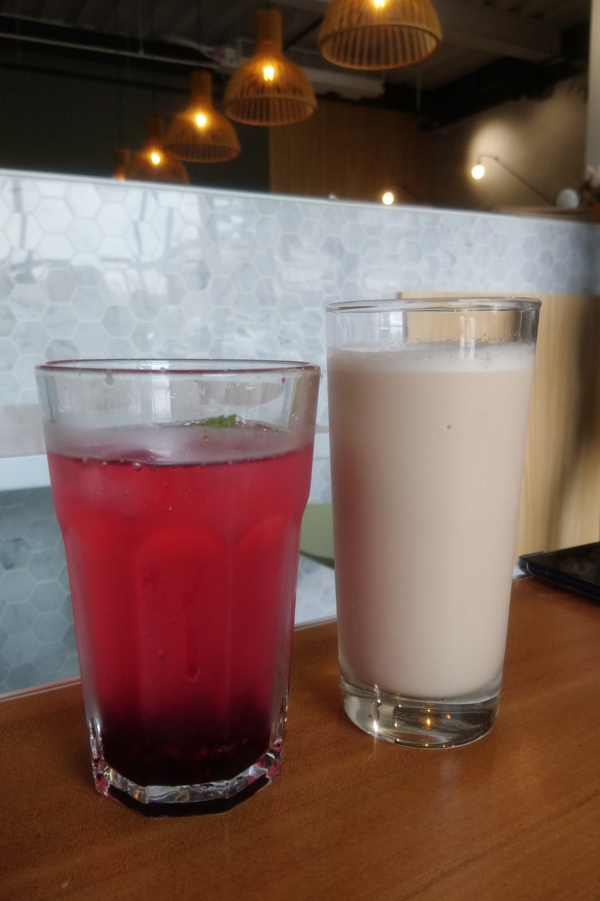

[竹北] HOI x 山語喃喃
| 餐廳名稱: | HOI x 山語喃喃 |
|---|---|
| 地 址: | 新竹縣竹北市成功十一街17號 |
| 營業時間: | 週四~週一 09:00~14:00 |
| 週二，週三公休 | |
| 電 話: | 03 668 8036 |
真沒想到，在住家附近，有一間水準不錯的早午餐， 根據山語喃喃官方Facebook 粉絲頁 因為老闆娘小孩剛出生，營業時間暫時改成每天 09:00-14:00，包括星期六、日都是， 公休日為每週二、三。
其實山語喃喃的本業是烘焙工作室，幾年前就開始提供手工麵包自取的服務， 2018年底增加經營早午餐，使用自家的麵包，搭配自製的醬料，肉品， 做成跟大量加盟的西式早餐不一樣的味道，進行市場區隔，算是挺有特色的。
菜單如下，品項還不至於太多 - 
今天兩人用餐而已，點兩份餐，兩杯飲料。 
鴉片牛五花，今天的麵包是用 Bagles，都是看當天做哪些麵包，也有可能是 巧巴達，吐司等。蛋可選半熟蛋，夾蘋果切片，生菜。還行! 
Hakka Boy，就是 客家鹹豬肉 夾 蛋，蘋果切片，生菜。還行! 
飲料我覺得有點弱，上飲料上得比餐還慢，味道也還好，顯然不是麵包店的強項。 紅色的是莓果氣泡飲，有點說不上來的人工的感覺。奶茶倒是正常不甜。都是尚可。 
整體來講，就是比西式早餐連鎖店貴一點，品質好一點，但又不至於是 裝潢優美西餐廳裡動不動就兩、三百元的豪華早午餐。 如果某個假日醒來，只想吃稍微好一點的早餐，不想吃到豪華早午餐， 那 HOI x 山語喃喃 就是個好選擇。